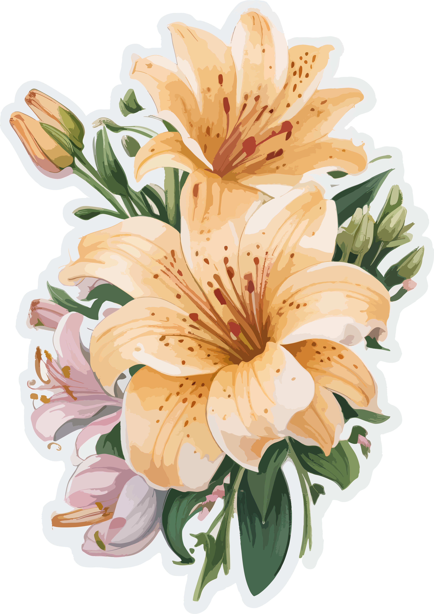
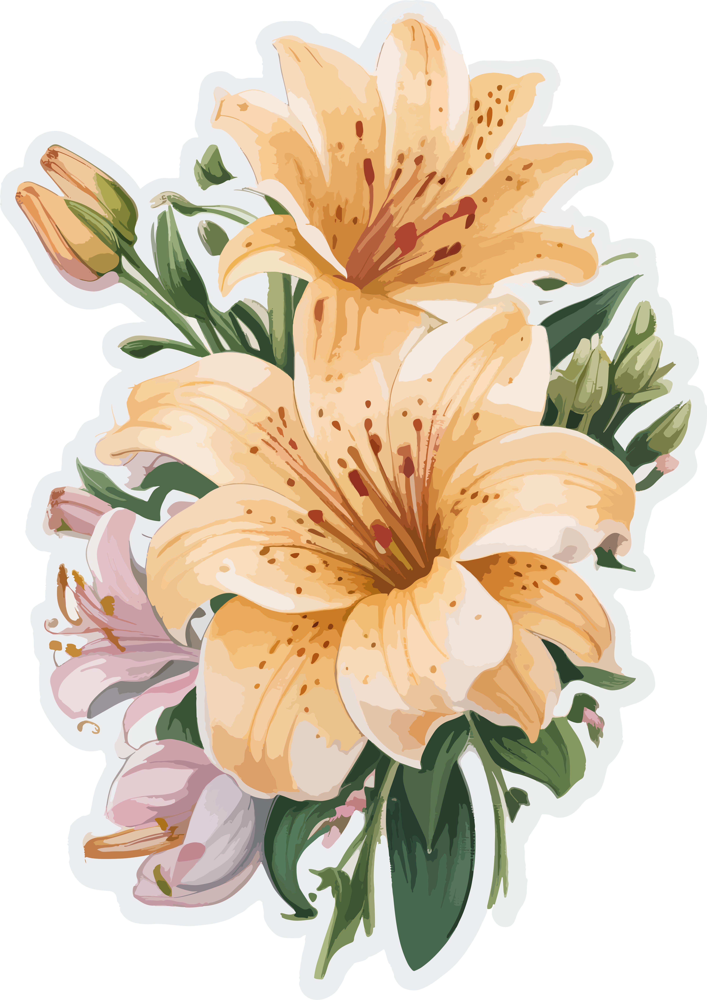
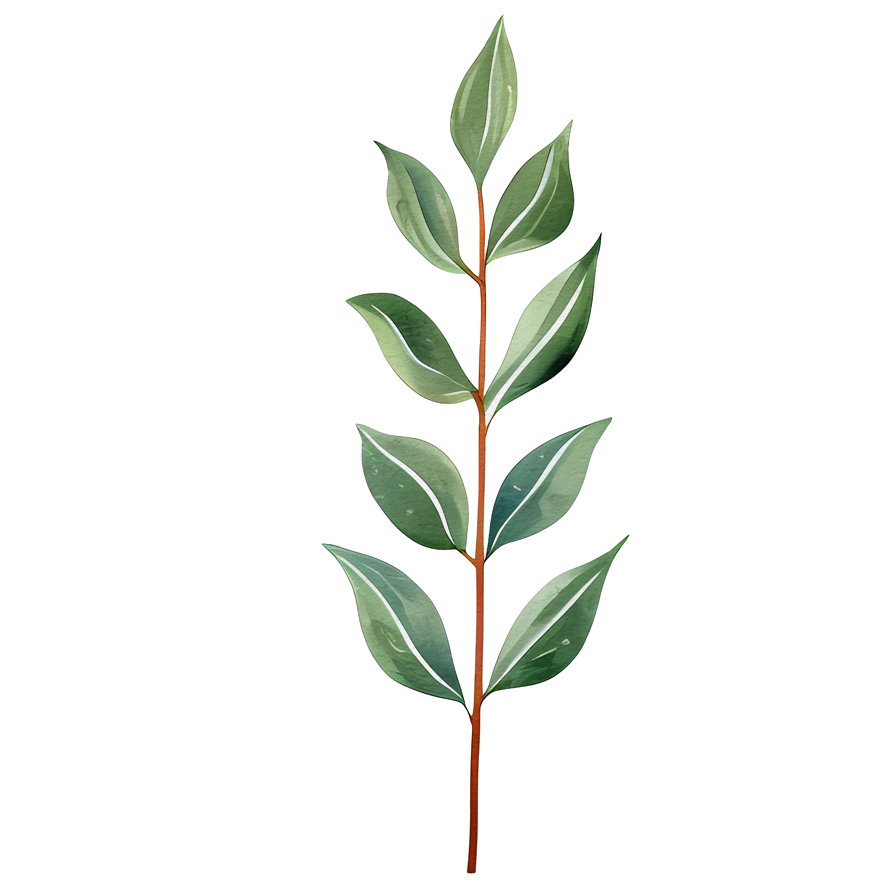
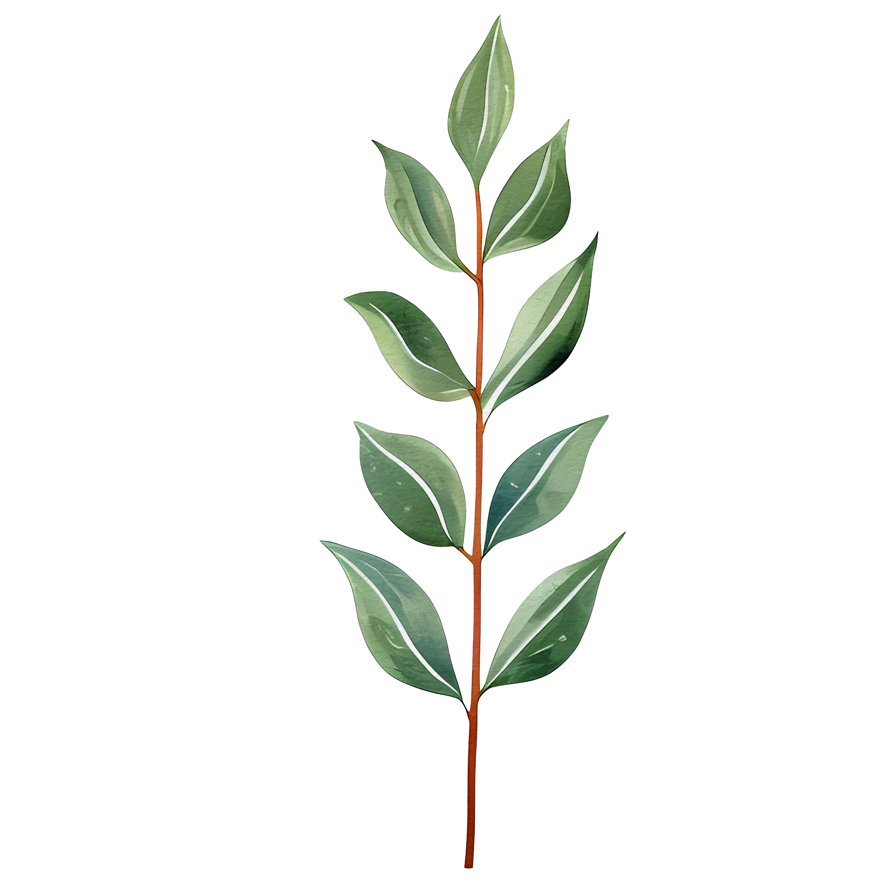

Dear Zehra,
I read your note multiple times, and each time I read it, I found something new about myself. I used to think of myself as weird, but you gave me the term balanced guy. This is actually the first time someone has given me such a detailed note about me and their experience with me. Honestly, the moment you told me that you would give me feedback (you used that word, although you may not prefer to call it feedback), I was excited to know what you had to say about me. Heartfelt thanks for your beautiful note 🤍.
Actually, people talk badly about others often unknowingly because it's instinctive in human nature, but to think good about someone and write it down takes patience, commitment, and a kind heart — all three of which you possess 🌿. I often wonder what pushed you to give a note to everyone, but anyway, it was beautiful that you considered everyone, not just a few people, as most people usually do — and even I am doing that right now.
During the months we spent together, I made a lot of good memories with you. If I say it in a poetic way, those memories will stay with me forever. You made a place feel like home; otherwise, if it were not for you, it would have remained just a place. You were the web that connected everyone into a family 🏡.
At a time when I was very frustrated by the tiring work of FP and the boring school (not classroom) experiences, you became a cold breeze through your cheerfulness 🍃. I was trying to learn about myself and change my behavior with people, and you helped me unknowingly. You gave me feedback, and I learned many things from you. I’m still confused about how you managed to give attention to everyone, pulling strangers closer and making them feel connected. You were simply amazing in connection and character ✨.


Zehra, you were (and still are) kind, generous, playful, and beautiful 🌸. The things you brought for us, and the way you always asked, “You guys want something?” whenever you bought anything, are perfect examples of your generosity. I don’t know how many times others experienced this, but I experienced it many times. You were kind in dealing with people and helping them; even the anger you showed had kindness hidden inside it. That kindness is what makes you cry when you’re hurt or feel bad. Please keep your heart kind, and remember that crying is not bad at all — even in front of people. It is not a weakness, but a strength, washing away grudges and pain from the heart 💧. That’s why you’re so pure and smile so brightly all the time. You once said you don’t smile but laugh — and that’s perfectly okay. In fact, your laughter brings smiles to everyone’s faces 😄.
I don’t think I should say anything about your playfulness, because you already know it, and many people must have commented on it. What I want to say is: keep it with you, because that’s what makes you you. The energy you have and spread around you is unmatched ⚡. On the days you were not in the guest house, it felt like a graveyard wrapped in a thick blanket of silence — everyone just minding their own business. Your husband and the family you build will be extremely lucky to have you as a spouse and a mother. I know for sure you will keep them cheerful, connected, and happy 💕.
You told me to fall in blind love, but like you, I’m also not the kind of person who goes for blind love (at least until now). I do it with logic 😅. Otherwise, I would have chosen you, since you have all the qualities I want in a girl.
As you said, I never got angry even when you disturbed me. I don’t know whether I call it irritation, because I never felt it that way. For me, anger usually comes from being hurt or feeling bad, and I never felt bad when you were around me, and you never hurt me other than the physical attacks, the revenge of which you avoided because you were a girl😏. Whether it was disturbing, talking, eating, helping, walking, or cooking, I was always good when you were around me 🤍.
You are actually a very good chef, and I know you are damn confident about that 👩🍳. I only feel bad that you cooked only a few dishes. I really loved your transformation into a motherly role whenever you were cooking. I enjoyed cooking with you a lot. Please continue enjoying cooking and experimenting with new dishes, but also give people around you some roles, so you don’t have to carry all the chores alone.

 

I don’t know exactly what your designation is in my life. As I shared earlier, you were first an arrogant stranger, then a lovely co-worker, and later a trustworthy companion. I’m sure nobody has understood me this deeply in such a short span of time. You didn’t share things just for your comfort — you gave me space in your wonderful life. You helped me understand you with the freedom you gave me.
I remember the first day I opened your iPad, and you told me the password. Others memorized it, but I didn’t care to, because I thought I would never use it again — the rest you know 😌. With people I’ve known for years, I still have to ask permission, but with you — after just a few weeks — I knew you would be okay with it. On the last day, while preparing slides, I took your laptop to use NotebookLM without asking, and later I felt bad and asked your permission, which came as “sure,” just as I expected. You gave me so much freedom that everything of yours felt like mine, and that’s why I cared for you 🤍.
I cared for you — asking you to sleep, advising you (even if it disturbed you) — because you were and are important to me. When you didn’t get enough sleep and carried grudges, along with risking your physical and mental health, it dimmed the glow of your bright face, and I hated seeing you drained. About coffee — it’s okay in moderate amounts; it has benefits and keeps you fresh ☕. But please keep it within safe limits, because even nectar becomes poison if taken in excess. Don’t take this as advice, but as a suggestion — because I know you don’t easily take advice except from your parents. Still, accepting advice is a good thing; no one is perfect, and we all need others sometimes.


It was you who made the first efforts to connect with me, just as you did with others. Like every boy, I felt a slight attraction towards a girl who was beautiful, wearing Hijab, elegant, and talkative. I tried to distance myself because I felt it wasn’t right. But later, when you spoke about how you disturb your brothers the same way you disturb us, and when I asked whether you considered us your brothers, from that moment, I found a beautiful companion and a cute sister in you 🤍. When you were energetic and well-rested, your face glowed, and I hated seeing you drained because I knew silence would follow.
You mentioned that I have strong faith, but that doesn’t mean I am a perfect person. Whatever good I have, it comes from the Almighty and from the way I was brought up, so the credit goes to my parents and family. I know you are a proper hijabi girl with good manners and traits, brought up in a good family, with pious grandparents. You also want to become more religious, and that fire inside you will surely light up one day 🔥. Please try to maintain your Namaz, even if it’s qaza (late). I remember the first time I felt attracted to you was because of your beautiful Qira’at — I hope you continue doing that 📖.
I see you enjoy solitude and meditation. Everyone needs time to be with themselves, to reflect and think about life’s purpose. What I want to say is: your character is unique; please don’t push yourself beyond the limits you’ve set for yourself.
Who knows whether we'll meet again or not, but I will try to invite you to my wedding if it happens — please don’t miss it 💍. We’ve already discussed your wedding too, and we (the gays 😄) will be there, Inshallah.
Be happy and make others happy 🌈. The more you connect with people, the more you should connect with the Creator (a reminder for me, too). Irritate your brothers and mother, respect your father, and be love for your entire family. You — and the chaos around you — will be deeply missed. WhatsApp messages can share thoughts, but they can never replace that chaos. Please keep being perfect wife material — I truly enjoy it a lot 😊.
From,
Husband material with 💚